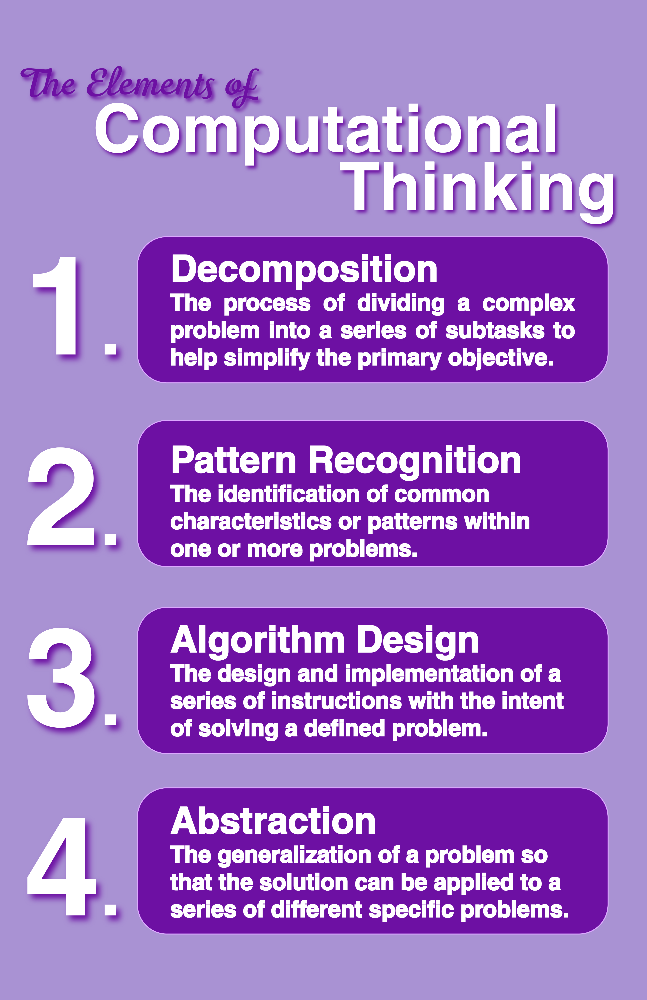

For this project, I set out to create an engaging and educational infographic that highlights the fundamental elements of Computational Thinking: Decomposition, Pattern Recognition, Algorithm Design, and Abstraction. The goal was to present these concepts in a clear and visually appealing way that makes them accessible and easy to understand for a broad audience. Each element of Computational Thinking is accompanied by a brief but informative description of what that element signifies.
To bring this project to life, I used Adobe Express, which provided me with a versatile platform to blend strong visuals with informative content. The design process involved selecting appropriate layouts, color schemes, and typography to create a balance between aesthetics and clarity. Through this, I learned how critical design choices affect the readability and overall impact of educational materials.
Tools Used: Adobe Express
Beyond mastering the technical aspects of Adobe Express, this project deepened my appreciation for Computational Thinking as an essential skill set in technology and software development. Breaking down complex problems into manageable parts (Decomposition), spotting recurring patterns (Pattern Recognition), creating step-by-step solutions (Algorithm Design), and focusing on relevant details while ignoring irrelevant information (Abstraction) are foundational to developing efficient and effective applications.
Working on this infographic also enhanced my ability to communicate technical ideas visually, a skill that is invaluable for bridging the gap between complex concepts and diverse audiences. Overall, this project reinforced the importance of Computational Thinking not just as an academic topic, but as a practical framework that underpins much of the work that I aspire to do in the technical field
